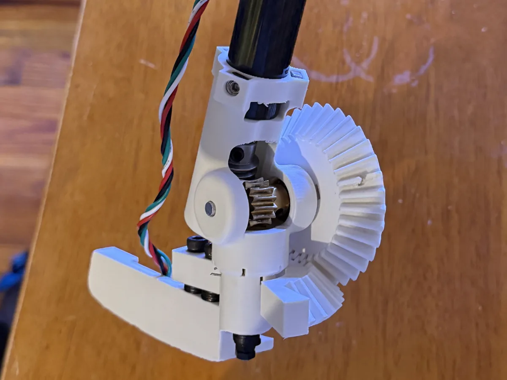
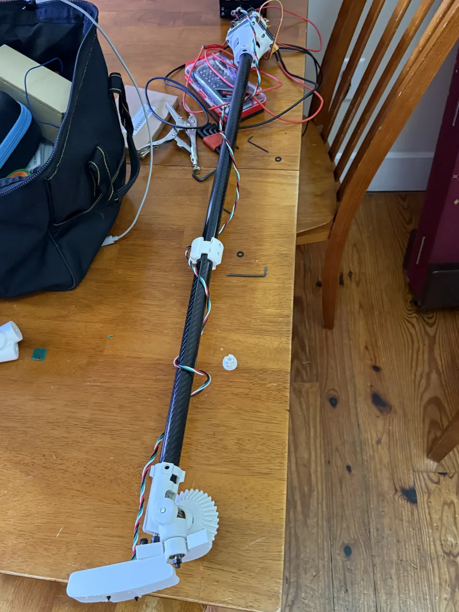
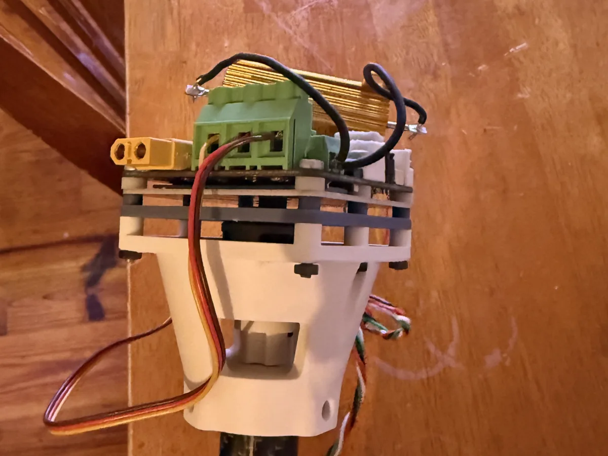

Robotic Putter
The CZERVIK MK 0 is a prototype robotic putter designed to answer the simple question: can golf be made accessible to everyone? Initial work focused primarily on tremor rejection, targeting golfers with conditions like Parkinson’s and MS that may preferentially disturb putting.
However, the MK 0 is only the beginning. The real dream is more than just a putter that anyone can use. It’s a world where engineering is used to make sports accessible to everyone.
01 / THE GOAL
Make putting accessible to golfers with tremor-inducing conditions like Parkinson’s and MS.
02 / THE PROTOTYPE
Tremor rejection through closed-loop control of the putter head using an FOC-driven brushless gimbal motor and 6 DoF inertial measurement unit.
03 / THE NEXT STEPS
The CZERVIK MK 0 has demonstrated the technical feasibility of tremor rejection in golf putters. Work on the next prototype (CZERVIK MK 1) is ongoing and will focus primarily on user experience, controls, and design for manufacture and assembly (DFMA).
CZERVIK
MK 0
The first step. 3D printed putter head, prototype board, and a cheap motor. A technical proof-of-concept waiting to be transformed into a finished product.
04.a / CUSTOM DRIVETRAIN
Worm gear and beveled rack stages allow non-backdriveable torque transfer between non-parallel shaft and head axes.
15:1 reduction trades maximum angular acceleration for an increased position resolution.
Motor located in handle to minimize footprint. An inner hardened stainless steel shaft runs the length of the club.
Anti-backlash torsion springs take up mechanical play, increasing the phase margin of the system.

04.b / CARBON FIBER SHAFT
Hollow outer carbon fiber shaft allows for a very rigid and lightweight putter.
3D printed collars with set screws clamp the thin shaft sections together without damaging the brittle composite.

04.c / PID-DRIVEN CONTROLS

Field-Oriented Control (FOC) motor drivers allow for positional control of cheap brushless DC motors.
For initial testing, a two-phase PID control system was used, which used the backswing to predict the time of impact.
Future work will focus on generalizing from tremor rejection to all disturbance rejection, allowing for perfect putts every time.